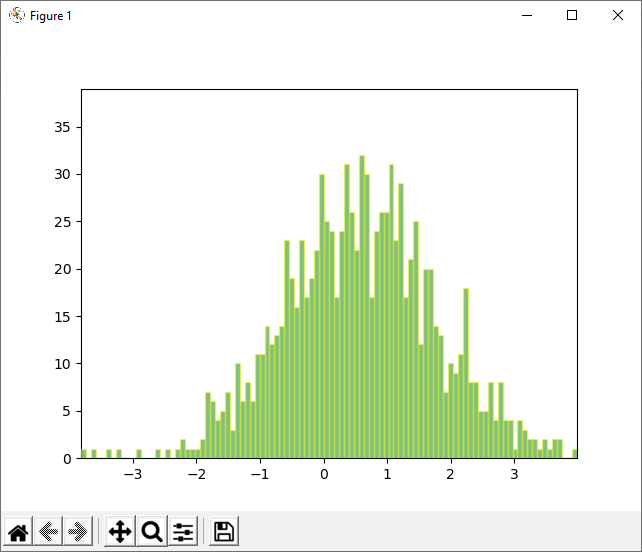

Заимствование кода¶
Писать программный код сложно и долго. Часто для типовых задач можно найти готовый программный код. Хороший источник образцов кода - документация к программам.
Например, в документации к пакету рисования графикам мы можем найти пример построения гистограмм.
Выполните в блокноте код
%matplotlib tkдля того, чтобы рисунок открылся в отдельном окне.Скопируйте код примера со страницы https://matplotlib.org/2.0.2/examples/animation/histogram.html и вставьте в ячейку с кодом.
Выполните ячейку (Ctrl-Enter) (если ничего не произошло - выполните повторно).
В результате должно появиться окно, в котором многократно создаётся изображение гистограммы случайного распределения чисел, формируя таким образом анимацию.

Найдите в заимствованном коде определение функции. Как эта функция используется в последующем коде?
Созданная ближе к концу функция animate() не вызывается в классической форме с круглыми скобками. Вместо этого она как переменная передаётся в качестве второго по счёту аргумента в функцию animation.FuncAnimation():
ani = animation.FuncAnimation(fig, animate, 100, repeat=False, blit=True)
В справке к функции animation.FuncAnimation() указано, что второй аргумент func: callable - это вызываемый (callable) объект - функция для вызова в каждом кадре анимации.
Таким образом, функции - это тоже переменные, их можно копировать и передавать в качестве данных в другие функции, например, для многократного выполнения с разными аргументами.
В начале фрагмента заимствованного кода мы видим текст на наскольких строчках, ограниченный тройными кавычками с двух сторон. Это особый способ задания длинных строк, который иногда используют для многострочных пояснений в коде.
'''Например,
эта длинная строка ограничена одинарными тройными кавычками,
поэтому в ней можно использовать "одинарные двойные" кавычки
для выделения строк.
Также содержимое этой строки не присвоено никакой переменной,
поэтому оно никак не используется кроме как в качестве
комментария к коду.
''';
После длинной строки идет блок выражений со сходной структурой: все выражения начинают со слова import.
import numpy as np
import matplotlib.pyplot as plt
import matplotlib.patches as patches
import matplotlib.path as path
import matplotlib.animation as animation
Дело в том, что функционал отрисовки изображений на экране не входит в базовый набор функций языка Python. Язык программирования универсален и в его ядро входит небольшой набор самых необходимых команд. Дополнительные функции можно подключить, импортировав соответствующие программные модули.
В первом выражении импортируется модуль numpy - это популярная библиотека для работы с массивами чисел. Она импортируется под коротким именем np.
Короткие имена удобнее при написании кода.
Команда as (англ. как) используется для задания имени.
Буквально команду импорта можно прочитать как «импортировать numpy как np».
Крупные модули состоят из подмодулей: при записи они отделяются точкой.
Так в последнем выражении в этом блоке подмодуль animation из библиотеки matplotlib импортируется под именем animation.
matplotlib - это основная библиотека для построения разного рода графиков и рисунков. Название состоит из кусков: mat - матричный, plot (англ. чертеж) - график, lib (library) - библиотека. То есть библиотека для построения графиков с использованием матриц (двумерных массивов).
Примеры рисунков можно посмотреть в онлайн-галерее.
«Библиотека» в названиях модулей указывает на то, что в модуле собраны полезные инструменты для решения задач в какой-то области. Сходное название - «программный пакет», то есть пакет функций.
Функции для работы с массивами и графиками для удобства собраны в один из подмодулей библиотеки matplotlib.pylab.
Когда Вы приступаете к анализу данных весь пакет этих полезных функций можно подгрузить «магической» командой, которую Вы увидите в начале многих блокнотов с упражнениями.
%pylab inline
Populating the interactive namespace from numpy and matplotlib
Команда inline показывает, что создаваемые рисунки будут встраиваться непосредственно в страницу блокнота.
Можно продолжить разбираться в заимствованном фрагменте кода, посмотреть справку по вызываемым функциям, проследить о судьбе переменных - где они задаются и как используются далее по коду. Изучение готового хорошо написанного кода полезно для понимания проблемы. Можно понять, как думал автор, какие решения использовал. А можно просто брать сложный код, предназначение некоторых частей которого непонятно, и с успехом использовать, понимая лишь его общую структуру. Понимание точек входа и выхода позволяет встроить фрагмент кода для выполнения продвинутой операции в цепочку собственного алгоритма обработки своих данных.